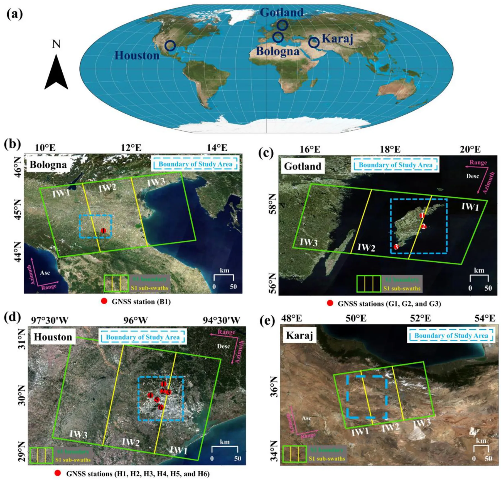
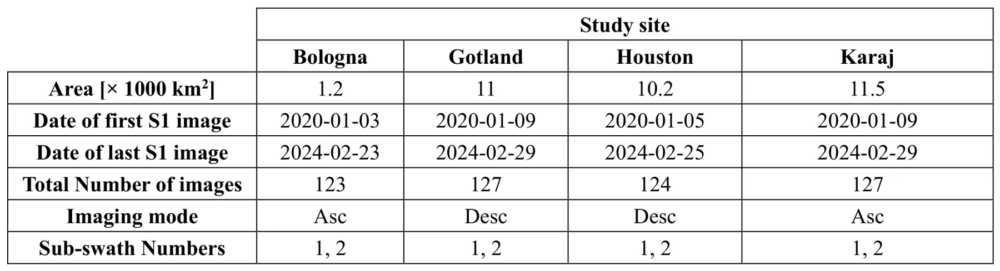

DefoEye：面向 Sentinel-1 时序 InSAR 分析的 Python 软件DefoEye: Python-Based Software for Facilitating Time-Series InSAR Analysis of Sentinel-1 Remote-Sensing Data
对 GNSS 辅助形变监测和地学时序产品有价值，提供量化外部验证；并非 GNSS 定位、SLAM 或实时融合算法。
一句话工作总结
补齐 GMTSAR 的端到端时序 InSAR 流程，并用 GNSS 站和其他工具验证长期地表形变产品。
摘要
DefoEye v1 是封装 GMTSAR 的开源 Python 软件，为 Sentinel-1 提供统一的时序 InSAR 工作流，支持并行任务、干涉图网络剪枝和多种解缠干涉图锚定方式。作者在四个不同地质、形变和气候条件的地区评估 2020–2024 年结果；其中三个地区与 10 个 GNSS 站对比，RMSE 为 4.3–11.9 mm、Pearson 相关系数为 0.63–0.95，Karaj 地区与其他工具也获得接近结果。
Many existing time-series Interferometric Synthetic Aperture Radar (TS-InSAR) software tools have limitations, including restricted geographic applicability, commercial licensing, and incomplete end-to-end processing support. Although GMTSAR avoids some of these constraints, it still requires substantial manual intervention and C-shell commands, lacks a user-friendly graphical interface, and omits important steps such as interferogram network pruning and anchoring of unwrapped interferograms. This paper introduces DefoEye (v1), an open-source Python-based software package that wraps GMTSAR and provides a unified, user-friendly TS-InSAR workflow for Sentinel-1 data. DefoEye supports parallel job execution, interferogram network pruning, and multiple anchoring options. Its performance was evaluated from 2020 to 2024 in four regions with different geological settings, deformation mechanisms, and atmospheric and climatic conditions. In Bologna, Italy; Gotland, Sweden; and Houston, USA, DefoEye results were compared with observations from 10 GNSS stations and showed strong agreement, with RMSE values of 4.3-11.9 mm and Pearson correlation coefficients of 0.63-0.95. In Karaj, Iran, where GNSS observations were unavailable, DefoEye was compared with other widely used processing tools and achieved similarly close agreement, with an RMSE of 4.8 mm/yr and a Pearson correlation coefficient of 0.98. These results demonstrate that DefoEye provides reliable TS-InSAR products for geological, hydrological, and environmental applications.
中文解读摘录
- 原题：Swimm3R: Splatting with Medium-aware SfM for Underwater 3D Reconstruction
- 作者：Minseong Kweon, Junaed Sattar
- 推荐评分：9.2/10
- 核心方法：把空气中几何先验蒸馏到前馈骨干，并用物理 head 联合回归水下成像参数、相机位姿和恢复点云；随后用带 Beta primitives 与散射感知几何梯度的 Underwater Beta Splatting 表示场景。
- 为何值得看：它不是单纯先增强图像再做 SfM，而是把散射、衰减、位姿和几何放进统一框架。论文报告相对 WaterSplatting 平均 PSNR 提升 1.47 dB，RRA@15/RTA@15 分别提高 2.0/2.4 个百分点；需进一步检查 Barbados 数据集规模、跨水体泛化和绝对尺度。
图表/页面预览

{kind=link}

{kind=link}
